Film
Ghosts in a Shell
Short Cross Labs video demonstrating the piece on camera, with its live AI “experience” effects running over the footage.
Short Cross Labs video demonstrating the piece on camera, with its live AI “experience” effects running over the footage.

Presenting the wearable AR installation, which renders what a transformer model pays attention to, created with Oneris Rico, Nicholas Guttenberg, and Olaf Witkowski.

Morning session, day three. What the simplest rule-based universes reveal about the living kind.

With Javier Fernandez and Olaf Witkowski. How predictable are the objects that emerge on Reddit’s r/place canvas? The talk starts about three minutes in.

Recorded poster talk from the Morgridge Institute postdoc years.

A 23-minute introduction to open-ended evolution and the mathematical models behind how living systems keep innovating in a changing world.

Featured speaker in the Cross Labs monthly series, on how innovation and emergence arise from interacting objects, and a mathematical path toward open-endedness.

Recorded talk from the 2021 Conference on Artificial Life. Winner of an ALIFE 2021 Best Talk Award.

How a competitive online game can reveal general mechanisms of open-ended evolution.

Invited talk at the International Workshop on Cellular Automata and Discrete Complex Systems.

Speaker at the second PyData Madison meetup, which Alyssa co-organized.

Teaching-assistant walkthroughs for Hector Zenil and Narsis Kiani’s online course, starting with cellular automata in the Wolfram Language.
Constructing Networks · Networks from Real Data (League of Legends)

Short poster presentation at the Third Workshop on Open-Ended Evolution.
Session discussion with David Ackley, Alastair Channon, and Norman Packard

An early talk from the ASU PhD years at the Astrobiology Graduate Conference: is life something we can compute?

On the upcoming ALIFE conference, current research, and what is next at Cross Labs.

The longer, three-way version of the same conversation.

A wide-ranging conversation on artificial life, embodiment, and building a research life in Japan.

Identity, science, inclusivity in STEM, and a little League of Legends.
Behind the scenes of planning ALIFE 2025 in Kyoto, why ALife is so tied to Japan, and a first look at the new Artificial Life Institute.
Life after the PhD, navigating careers outside the academy, learning ALife, and balancing science with religion.
Emergence, intelligence, what it means to be human, and a detour through political philosophy and ethics.
Science consultant for the novel. Credited in the acknowledgements.
On Chloe Benjamin’s research for Under Story, with Alyssa as her science research assistant since 2022: “the most fun job I’ve ever had.”
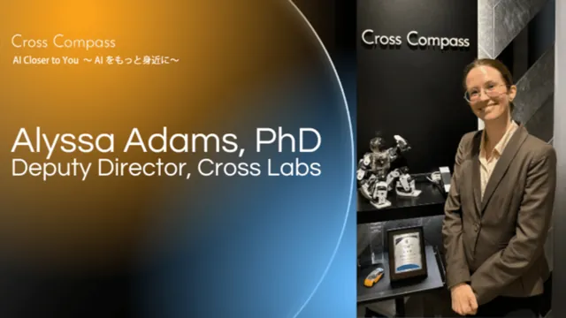
Interview on finding the mathematics of biological evolution, why Alyssa moved to Japan, and where the research goes next.
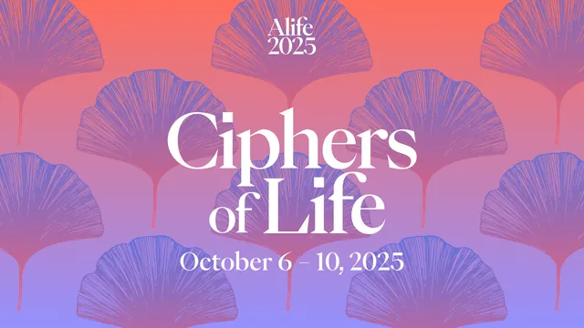
Preface to the Kyoto conference proceedings, with co-editors Olaf Witkowski, Lana Sinapayen, Manuel Baltieri, and Mahdi Khosravy.
Interviewed on moving from the US to Japan full-time, and the wave of US researchers applying to Alyssa’s lab in Japan.
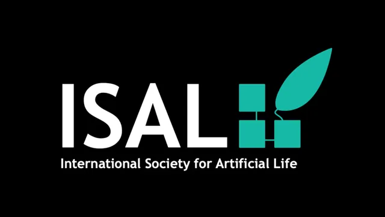
Results of the 2023 board elections.
With Oneris Rico, Nicholas Guttenberg, and Olaf Witkowski. The essay behind the installation: technology as a shell, and seeing through an AI’s attention.
With Nicholas Guttenberg and Lisa Soros. Published alongside Subjective Open-Endedness, approaching the same question through active inference.
With Nicholas Guttenberg, Lisa Soros, and Olaf Witkowski. Whether open-endedness is in the system or in the eye of the observer.
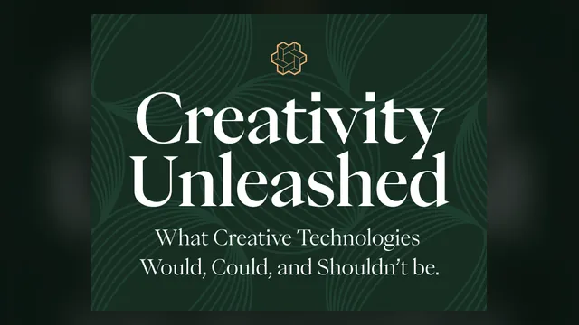
A personal essay on creative machines, starting from an experimental program on the family’s first computer. Written ahead of the Creativity Unleashed workshop.
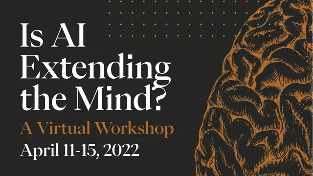
A recap of the second annual Cross Labs workshop.
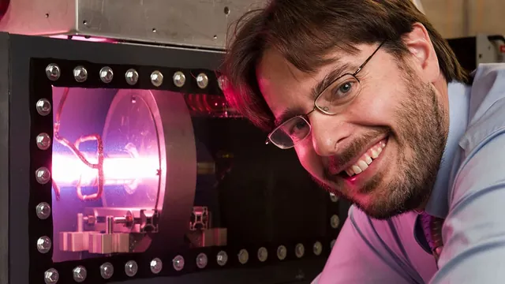
A feature on SHINE, the Janesville fusion and medical-isotope company that grew out of Morgridge and UW–Madison.
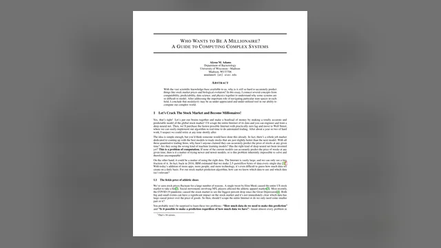
The case for modularity as an underused tool for modelling hard-to-predict systems, from stock markets to evolution.
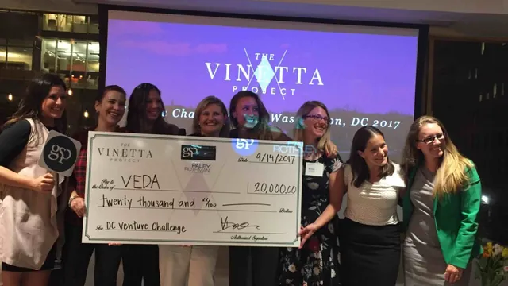
Quoted on VEDA Labs as a scientific response to the world’s data revolution.
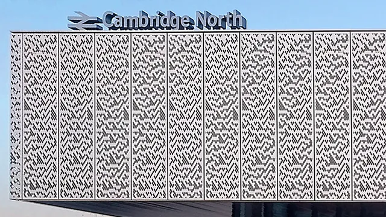
Stephen Wolfram on the Rule 30 facade of Cambridge North station, with photos credited to Wolfram Summer School alum Alyssa Adams.
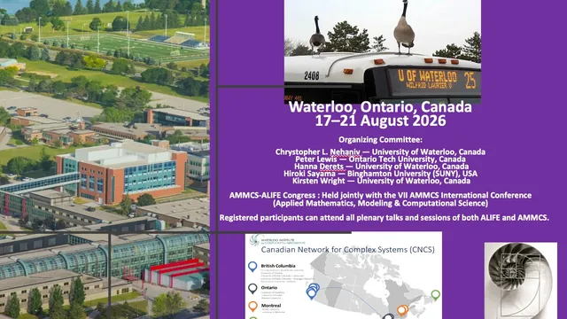
With Bruno Senzio-Savino Barzellato, Mahdi Khosravy, and Olaf Witkowski: how neural signals can be integrated into adaptive, evolving systems.

The Cross Labs team’s invitation to the Conference on Artificial Life. Alyssa opened the conference and gave a thank-you speech at its close. Organizing committee · Opening ceremony · Closing ceremony · Session recordings
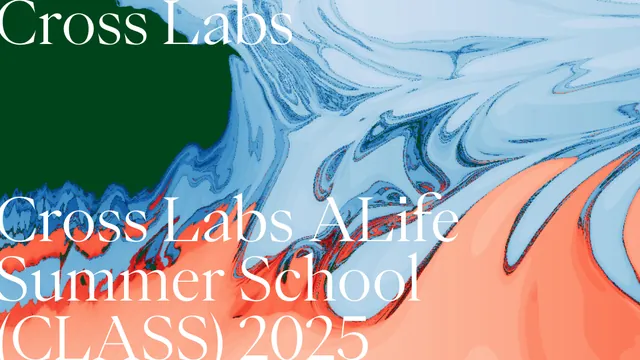
A four-week introduction to ALife research for secondary-school students in Kyoto, ending in posters at ALIFE 2025.

Fifth annual Cross Labs workshop, organized with Olaf Witkowski, Antoine Pasquali, and Katsunobu Suzuki. Keynote Panel & Discussion #2 · Event page
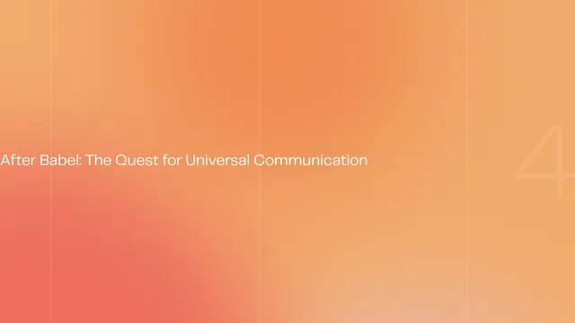
Fourth annual Cross Labs workshop, on communication across humans, animals, cells, machines, and aliens. Alyssa moderated two of its panels. Recordings
Without having to worry about becoming a professor.
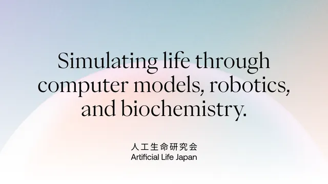
A hybrid research meeting for feedback on work headed to ALIFE 2024, held on site at Cross Labs.
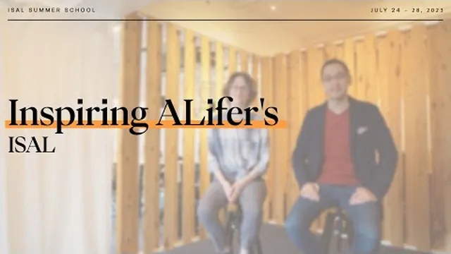
Co-organized with Olaf Witkowski and Jitka Čejková, with a series of recorded guest talks. Video series
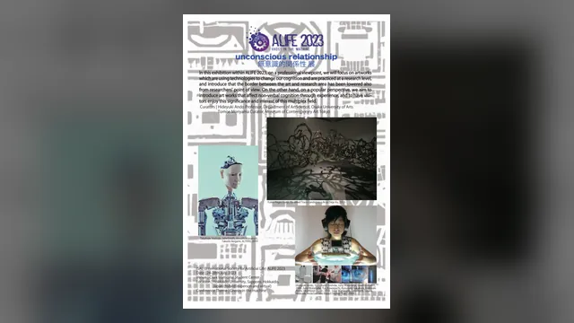
Catalogue entry for Ghosts in a Shell among the thirteen exhibited works.
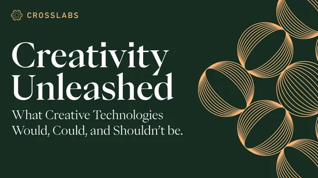
Third annual Cross Labs workshop. Alyssa chaired two sessions and joined the human roundtable. Recordings
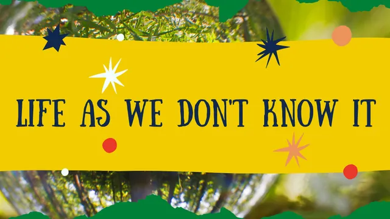
One of six scientists paired with artists to imagine life as we don’t know it. Exhibited May–August 2022.
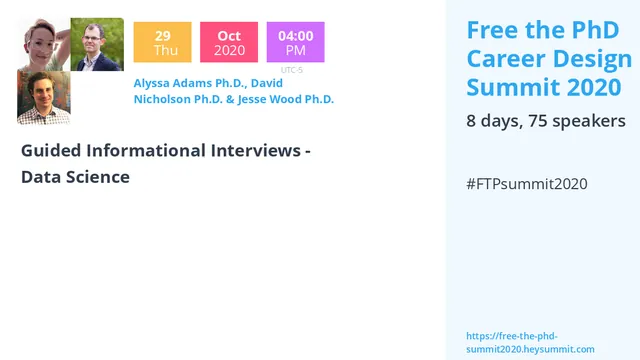
Panel with David Nicholson and Jesse Wood.
Co-organized the city’s PyData meetup from its first session in January 2020. Recordings
Twenty-five episodes hosted in 2023–24, produced by Oneris Rico. Cross Labs researchers on AI, ethics, art, consciousness, entropy, and the occasional hot dog. Full playlist · Series page

Hosted a Cross Labs science podcast, produced by Oneris Rico: AI, ethics, art, consciousness, entropy, and the occasional hot dog. All episodes
 25The future of open-source AI and community innovation
25The future of open-source AI and community innovation
 24The landscape of AI-generated art and hot dogs
24The landscape of AI-generated art and hot dogs
 23Challenges in simulating a neuron
23Challenges in simulating a neuron
 22Game rants and dystopian brain-ads tech
22Game rants and dystopian brain-ads tech
 21Navigating the web of deception
21Navigating the web of deception
 20Goals, values, and the philosophy of purpose
20Goals, values, and the philosophy of purpose
 19The stagnation of technological progress
19The stagnation of technological progress
 18The unaddictive yet intriguing
18The unaddictive yet intriguing
 17Scriptwriting: the balance between art and profitability
17Scriptwriting: the balance between art and profitability
 16AI and human creativity in media production
16AI and human creativity in media production
 15AI regulations, accountability, and the weight of consequences
15AI regulations, accountability, and the weight of consequences
 14Surviving disturbances in life and the Game of Life
14Surviving disturbances in life and the Game of Life
 13Life’s role in entropy
13Life’s role in entropy
 12The impact of technology on quality of life
12The impact of technology on quality of life
 11AI art vs. human art, copyright, and power dynamics
11AI art vs. human art, copyright, and power dynamics
 10Perspectives on bias, access, and empowerment on AI
10Perspectives on bias, access, and empowerment on AI
 09Will AI really destroy humanity?
09Will AI really destroy humanity?
 08Can humans be used as computational units?
08Can humans be used as computational units?
 07The business of AI: domination, data, and openness
07The business of AI: domination, data, and openness
 06Moral decision-making and the sacredness of consciousness
06Moral decision-making and the sacredness of consciousness
 05GPT models for personalized learning and the ethics of privacy in big tech
05GPT models for personalized learning and the ethics of privacy in big tech
 04What’s the medium of video games?
04What’s the medium of video games?
 03Interacting communities of AI models
03Interacting communities of AI models
 02Should language become obsolete?
02Should language become obsolete?
 01Interfaces for communicating and solving problems
01Interfaces for communicating and solving problems
Fourteen episodes hosted from 2022 to 2026, with Alyssa credited as a co-organizer of the series from 2024. Guests from across academia and industry on intelligence science, artificial life, and AI. Full playlist

Hosted the Cross Labs speaker series, with guests including Joel Lehman, Kenneth Stanley, Hector Zenil, and Hiroki Sayama. All episodes
 54Vegetables here, games there: BCI and new horizons · Bruno Senzio-Savino
54Vegetables here, games there: BCI and new horizons · Bruno Senzio-Savino
 53Humanistic computation and the magic of code · Sam Arbesman
53Humanistic computation and the magic of code · Sam Arbesman
 52Autocatalytic reaction networks in ecology, evolutionary biology, and economics
52Autocatalytic reaction networks in ecology, evolutionary biology, and economics
 47How to make things evolve · Hiroki Sayama
47How to make things evolve · Hiroki Sayama
 46Can a robot have an orgasm? The value of consciousness · Axel Cleeremans
46Can a robot have an orgasm? The value of consciousness · Axel Cleeremans
 45A biophysics-based protein language model for protein engineering · Sam Gelman
45A biophysics-based protein language model for protein engineering · Sam Gelman
 44Collective intelligence in AI and ALife · Seth Bullock
44Collective intelligence in AI and ALife · Seth Bullock
 43Biosignatures and deciphering the complexity of living systems · Hector Zenil
43Biosignatures and deciphering the complexity of living systems · Hector Zenil
 42A social network inspired by open-endedness · Kenneth Stanley
42A social network inspired by open-endedness · Kenneth Stanley
 41From social physiology to social neuro-AI · Guillaume Dumas
41From social physiology to social neuro-AI · Guillaume Dumas
 39How to beat superhuman Go AIs · Tony Wang & Kellin Pelrine
39How to beat superhuman Go AIs · Tony Wang & Kellin Pelrine
 38Law & artificial intelligence · Eduard Fosch-Villaronga
38Law & artificial intelligence · Eduard Fosch-Villaronga
 36Machine love · Joel Lehman
36Machine love · Joel Lehman
 35Tourism in video games: experiences in digital worlds · Anh-Thu Nguyen
35Tourism in video games: experiences in digital worlds · Anh-Thu Nguyen